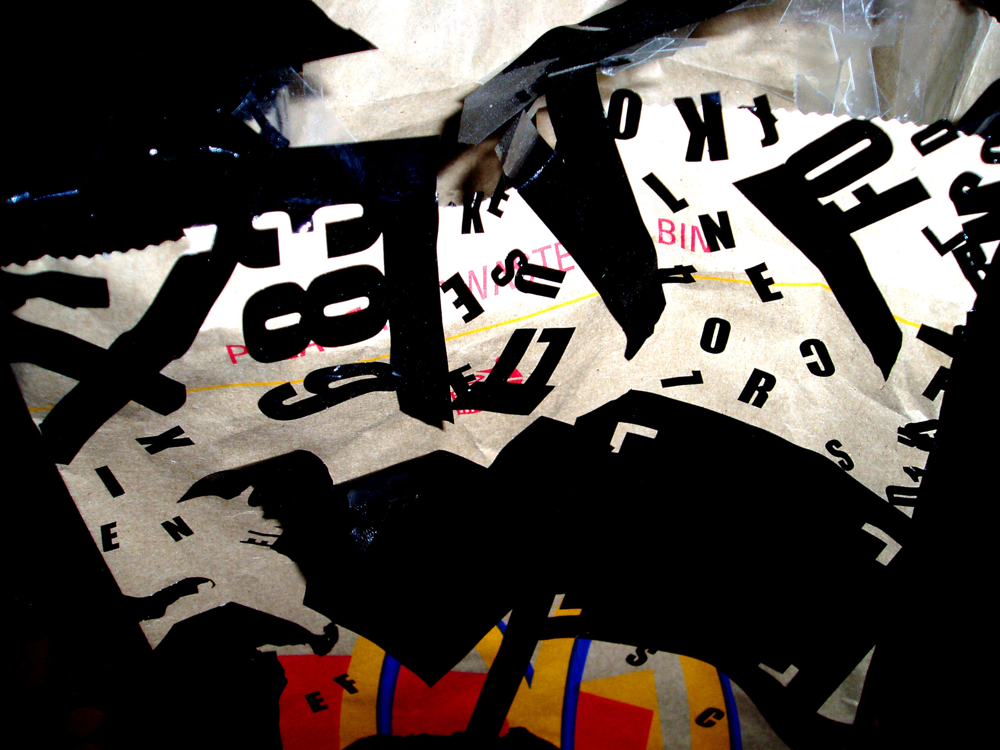
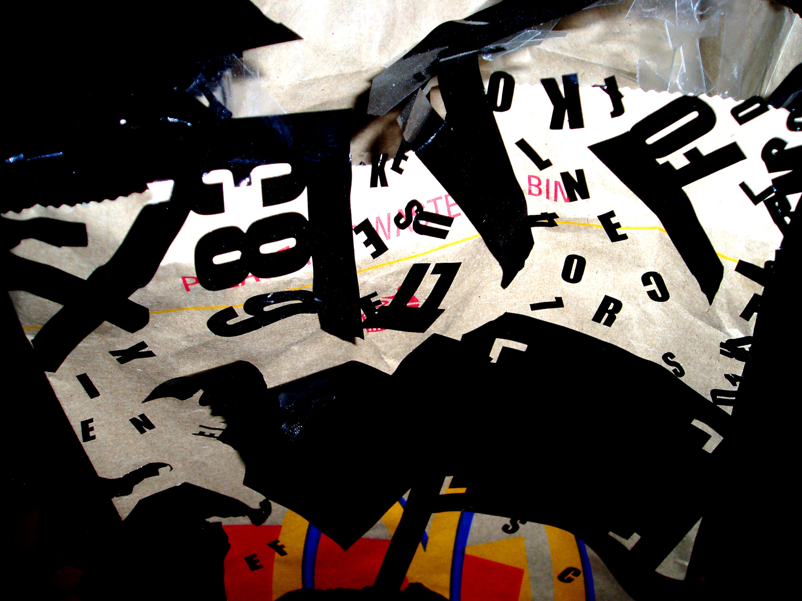

FLÂNEUR
1400x280x120CM
INDUSTRIAL PAPER ROOLS,
METAL RODS, BOOK, VIDEO,
POETRY
2025
FLÂNEUR is a framework developed by PONKS, rooted in the art of spontaneous encounters with
people and place. Rejecting the scripted demands of mass tourism, this work celebrates the joy of
discovery through human connection. In its first iteration, FLÂNEUR reimagines Hamrun-Malta's vibrant
capital suburd-through poetry and poster art.
Ten independant business owners, hailing from Togo to Mauritius, Syria to Santa Venera, shared their
stories: their lives, ties to Hamrun, and their hopes, dreams, and desires. PONKS transformed these
intimate conversation into ten stream-of-consciousness poems, each accopanied by a poster
featuring a striking line of verse
The posters were displayed in the shop fronts of each participating business, inviting passersby to
engage as flâneurs themselves. Scanning QR codes on the posters revealed the poems, and those who
collected all ten unlocked a free digital edition of the FLÂNEUR book.
The project culminated in a limited-edition book (PONKS' first publication, released by Kobta Calleja) and
an exhibition at Hamrun's historic train station. At its heart stood a 14-meter steel installation, evoking
the carriages of Malta's long-vanished railway. Rolls of book paper unfurled like tracks, displaying the
posters, poems, and portraits of each business owner - a tribute to Hamrun's unstoppable motion and
its overlooked diversity.
The ghost train, forever in transit, became a metaphor for the suburb itself: a place of perpetual
becoming, carried forward by its people.

FLÂNEUR
FLANEUR
FLANEUR
FLANEUR
FLANEUR
FLANEUR